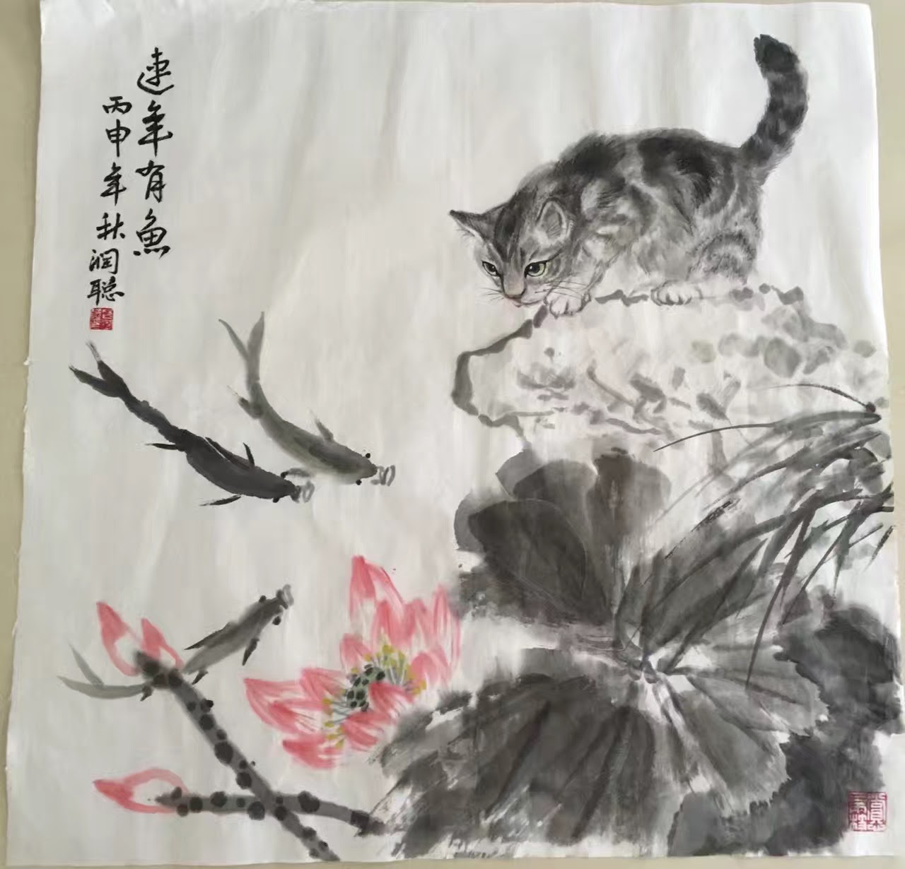

Services
Workshop Organisation
- AAAI 2026 Workshop — Personalization in the Era of Large Foundation Models
- ACL 2024 Workshop — 10th SIGHAN Workshop
Editorial Roles
- Guest Editor, Data Intelligence, MIT Press, 2024
- Action Editor, 10th SIGHAN Workshop at ACL 2024
Area Chair
- EMNLP'25
- ACL'25'26
- CCL'25
Reviewer
- Computational Linguistics: ACL, EMNLP, NAACL, EACL, AACL
- Machine Learning: NeurIPS, ICLR, ICML, Statistics and Computing
Others
My programming skills include Python, R, Javascript, HTML, CSS, MATLAB, LATEX.
My hobbies include Chinese ink wash painting, violin, board games (e.g. Bridge, Hanabi, Happy Pigs), and video games (e.g. Dota 2, World of Warcraft, Oxygen Not Included).
